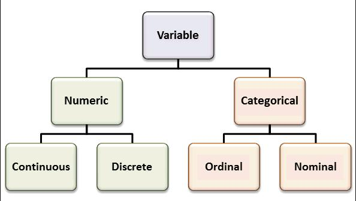

Resume Variables
Listed below are the columns of data that can be divided into Categorical and Numeric variables.
If you need more information, click here.
-
Categorical variable is a variable that can assume a limited and generally fixed number of
possible values, assigning each individual or other unit of observation to a particular group or nominal category,
based on some qualitative property.
-
Numeric variables, we can divide ourselves into discrete variables
and continuous variables.
-
Discrete variables are used when a given set of possible results is finite or enumerable, a
good example is the number of children, number of students in a school for example.
-
Continuous variables are numerical variables that have an infinite number of values between any two values.
A continuous variable can be numeric or date / time. For example, the length of a piece or the date and time when a payment is received.

Categorical variables:
{% if string|count > 0 %}
{% for column in string %}
{% endfor %}
{% endif %}
Numeric Variables:
{% if int|count > 0 %}
Discrete variables:
{% for column in int %}
{% endfor %}
{% endif %}
{% if float|count > 0 %}
Continuos variables:
{% for column in float %}
{% endfor %}
{% endif %}